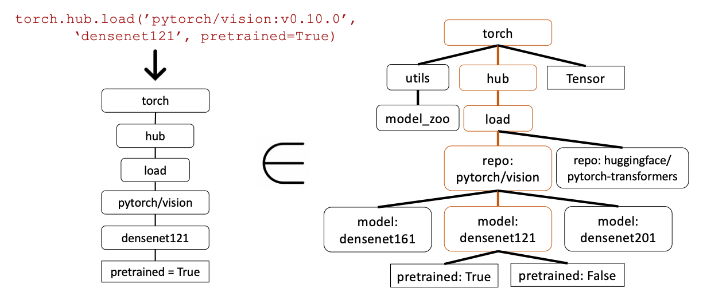
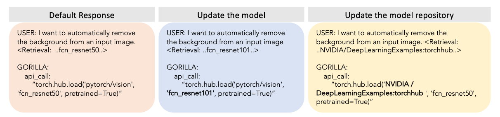

Foundations and Modern Understanding
How a program turns a person's sentence into data it can act on, and how your team's project begins.
First ninety seconds. Tell the room the plan: we start from zero, every new word gets explained, and you will not be asked to code in class. The instructor runs the demos. Your own project work happens between sessions.
- Ask who has run
scripts/verify_setup.pyfrom the team template. Fix any FAIL at the first break, not at minute 90.
Two bots get the same two lines. Only one remembers.
Both bots read these lines, one after the other:
- "Book me a table for 4 on Monday at 7pm"
- "Actually, make that Tuesday"
Line 2 only mentions the day. What happens to the party size and the time?
First, a small bot that only matches keywords. It uses no model and needs no internet. Then a second bot that uses an LLM, the kind of program this course builds.
Two minutes. Read the two lines aloud. Ask the room to predict: "what will a bot do with line 2?" Take two guesses, then open demos/module-01/hook_demo.ipynb.
The same correction. Two very different results.
The top bot has no memory, so line 2 means nothing to it. The bottom bot is given the saved booking together with line 2, so it can change only the day.
Twelve minutes, almost all of it in the notebook. Run the keyword bot cell first, it needs nothing. Its real output for line 1 is Booked: {'party_size': '4', 'day': 'monday', 'time': '7pm'} and for line 2 it says "Sorry, I didn't understand that. Could you start your booking again?".
Then run the LLM bot cell. The notebook has no saved output for that cell yet, so run it once before class and keep the result on screen as a safety net. If the connection holds, run it live.
- Do not explain how the second bot works yet. The next hour does that, slowly. Just say: "by the end of today you will know exactly how this works."
- The bottom result on this slide is what the notebook should show. If the live result differs, say so honestly and use it as a discussion point.
A conversational agent does five jobs. Today is job one.
- 01UnderstandModule 1 · today
- 02DecideModule 2
- 03RespondModule 3
- 04RememberModule 4
- 05EvaluateModule 5
State: the facts a program remembers between messages, here the booking so far. The keyword bot reacted to each line alone, so it could not fix an earlier booking.
Job one, Understand: turn a sentence into clear data, and decide what to do when that goes wrong. Jobs two to five get one module each.
Four minutes. Point at the five boxes from left to right and give one plain example each: understand "book a table", decide "the table is full, offer another time", respond "you are booked", remember "same table as last week?", evaluate "prove it still works after a change".
Define state out loud before moving on. It is the word the whole module depends on.
Teaching a program to understand
We start from zero. What is an LLM call? What is JSON? How does a schema keep the answer in shape?
Ten seconds. Promise the room: no word will be used before it is explained.
One sentence, five jobs
- 01UnderstandFind what the user wants
- 02DecideChoose the next step
- 03RespondAnswer from a real source
- 04RememberKeep facts between chats
- 05EvaluateTest that it still works
| Job | What happens when the user says "Book me a table for 4 on Monday at 7pm" |
|---|---|
| Understand | The program finds the goal (book a table) and the details (4 people, Monday, 7pm). |
| Decide | Is a table free? Is anything missing? If yes, ask. If not, go ahead. |
| Respond | It writes a reply from real information: "You are booked for Monday at 7pm." |
| Remember | Next week: "Same table as last Monday?" |
| Evaluate | Before we change the code, we run tests to check the first four jobs still work. |
Three minutes. Keep it short, this is only a map. The table reads from top to bottom like one conversation.
Say: this module is only row one. The reason it gets a whole module is that every later job depends on it. If the program misunderstands the sentence, nothing after it can be right.
Understanding means finding the goal and the details
Intent: what the user wants to do, written as one short label. Entity: a detail in the request, like a number, a day or a name. Some books call entities slots. The output is something a program can use: it can branch on the intent and read each entity.
Four minutes. Step through slowly, one result per click. Students often confuse the two words, so ask at the end: "which one is book_table, which one is monday?"
Name both vocabularies once: the classical NLP books say intent and slot (or entity). We use intent and entity. Everything in this module is about producing exactly this output, reliably.
The old way used two separate models
Intent classifier: a model trained to pick one label (an intent) for a sentence. Entity tagger: a model trained to mark which words in a sentence are entities. Trained means the model learned from many examples, not from rules that a person wrote.
Four minutes. The point is not to teach classical NLP, it is to show what the new approach replaces, so the next two slides make sense.
Expected question: "why two models?" Answer: each one solves a different kind of problem. Picking one label for a whole sentence is one problem. Marking individual words is another. So two models, two sets of training data, and no guarantee they agree.
The disagreement on step 4 is an illustration, not a measured result.
Each model learns from sentences that a person has labeled
| A sentence | Intent label | Entity labels |
|---|---|---|
| "Book me a table for 4 on Monday" | book_table | party_size = 4, day = monday |
| "Cancel my booking for tonight" | cancel_booking | day = tonight |
| "Two seats on Friday at 8" | book_table | party_size = 2, day = friday, time = 8 |
| "Is a table free at 9pm?" | check_availability | time = 9pm |
| "Change it to 6 people" | change_booking | party_size = 6 |
A sentence with the right answer written next to it by a person. The table shows five. A real system needs many more.
A reliable model often needed dozens to hundreds of labeled sentences for each intent. To add one new intent, a team collected new examples and trained both models again.
Four minutes. Read two rows aloud and show what the person had to write down. Then ask: "how long would it take to label 200 sentences for each of 10 intents?" (2,000 labels, by hand.)
"Dozens to hundreds" is a common rule of thumb, not a measured figure for any one system. Say so if asked.
Bridge to the next slide: "what if we could skip all of this and just describe what we want?" That is what an LLM lets us do.
An LLM reads one prompt and writes one answer
LLM (large language model): a model that reads text and writes text. Prompt: all the text sent to the model in one call. State: what your program keeps between turns.
Four minutes. Prerequisite slide: some students have used a chat app but never called a model from code, and they believe the model "remembers" the chat. Step through slowly.
On step 2 say it twice: the prompt is everything the model sees. On step 4 point at the loop arrow: memory inside one conversation is your code passing the state back in, every turn. The check question later tests exactly this.
An LLM reads and writes small pieces of text called tokens
Token: a small piece of text. It can be a whole word, part of a word, a number or a symbol. Here "Monday" is split into two tokens to show this. Real tokenizers cut text in different places, so your count will differ. Context window: the most tokens a model can read in one call. APIs also charge by the token.
Three minutes. Two facts to land: the model never sees letters or words, only tokens, and a model writes its answer one token at a time. The second fact is the key to the constrained decoding slide later.
The split on this slide is an illustration. Do not claim that any specific tokenizer cuts the text this way.
JSON is a plain-text way to write structured data
{
"party_size": 4, // key: value, a number
"day": "monday", // a value in quotes is text
"time": "7pm",
"vegetarian": false, // true or false, no quotes
"notes": null // null means: no value
}JSON is text made of keys (names) and values. Every programming language can read it.
| Kind of value | Example |
|---|---|
| Text | "monday" |
| Number | 4 |
| True or false | true |
| No value | null |
JSON also has lists and nested objects. We do not need them today.
Four minutes. Most students have seen JSON, some have not. Point at each line of the example and say the word: key, value, text, number, true or false, null.
Stress null: it means "no value yet". We use it later so the model can say "I do not know" instead of guessing.
Real JSON has no comments and uses double quotes only. The // notes here are a teaching aid.
A JSON Schema is a written set of rules for a JSON object
{
"type": "object",
"properties": {
"party_size": {"type": ["integer", "null"]},
"day": {"type": ["string", "null"]},
"time": {"type": ["string", "null"]}
},
"required": ["party_size", "day", "time"]
}type: object- The reply must be one JSON object.
properties- The keys that are allowed, and the kind of value each one holds.
["integer", "null"]- A whole number, or no value.
required- These keys must always be there. Their value can still be null.
Four minutes. Go through the code from the outside in: object, then properties, then each type, then required.
This is the real schema from hook_demo.ipynb, not pseudo-code. Two things students get wrong: (1) required only means the key is present, the value may be null; (2) by default a JSON Schema does not forbid extra keys. You need "additionalProperties": false for that, and our demo does not use it.
The schema check accepts or rejects each reply
Four minutes. Step through all four. Each click shows one reply and one reason.
Honest detail for the student who asks "what about an extra key?": with this schema an extra key would be accepted, because the schema does not forbid extra keys. You can forbid them with "additionalProperties": false.
Set up the next slides: a check like this decides if a reply is usable. But who makes sure the model writes JSON in the first place? That is what the API call and constrained decoding do.
The API call has five parts
# 1. Connect to the model provider
client = genai.Client(api_key=os.getenv("GOOGLE_API_KEY"))# 2. The JSON Schema from the last slides, as a Python dictionary
schema = {
"type": "object",
"properties": {
"party_size": {"type": ["integer", "null"]},
"day": {"type": ["string", "null"]},
"time": {"type": ["string", "null"]},
},
"required": ["party_size", "day", "time"],
}# 3. The prompt: the current state plus the new line
prompt = (
f"Current booking state: {json.dumps(state)}\n"
f"User just said: \"{turn}\"\n"
"Return the updated booking state. Keep any field the user did not just change."
)# 4. The call
interaction = client.interactions.create(
model=GENERATION_MODEL, # which LLM to use
input=prompt, # what to send it
response_format={ # "answer as JSON that follows this schema"
"type": "text",
"mime_type": "application/json",
"schema": schema,
},
)# 5. Read the answer: JSON text in, Python dictionary out
state = json.loads(interaction.output_text)Five minutes. This is the moment to open demos/module-01/hook_demo.ipynb next to the slides and show the same five parts in the real cell.
Expected question: "what is an API?" Short answer: a set of functions another company runs for you, that your code calls over the internet. We give a fuller definition in the research dive.
Do not go into interactions versus older client styles. The course pins google-genai>=2.3.0 for this call.
Asking for JSON is not the same as requiring JSON
Prompt: "Reply only with JSON." Often the model obeys. Sometimes the reply looks like this:
Sure! Here is the booking:
```json
{"party_size": 4, "day": "tuesday"}
```
Hope this helps!Your code now needs extra work to cut the JSON out of the text. It can also be missing a key, like time here.
You send the schema with the call. The reply is always shaped like this:
{"party_size": 4, "day": "tuesday", "time": "7pm"}No extra words, every required key present. Your code can go straight to json.loads. The next slide shows how the API does this.
Three minutes. The message: "often works" is not good enough for a program. Asking politely depends on the model's mood. A schema is a rule the API enforces.
Do not claim that asking never works. It often works. The problem is the rare failure, which your code must survive.
The schema is checked before every token is written
Constrained decoding: while the model writes, the API only allows tokens that keep the output valid for your schema. Probability zero means the token can never be chosen, not just that it is unlikely.
Four minutes. Prerequisite from the token slide: a model writes one token at a time. This slide shows the extra step that happens between "the model scores the tokens" and "one token is chosen".
Honest detail: null is also a legal token here, because the schema allows null for party_size. The model picks between 4 and null. Constrained decoding controls the shape, never which legal value the model prefers.
Expected question: "is this only Gemini?" Other providers offer similar structured-output features, but their details and guarantees differ. Check each provider's documentation.
A reply can have the right shape and still be wrong
Hallucination: the model writes something that looks right but is wrong or made up. The schema cannot stop it. Your own checks and a fallback (two slides on) are what protect you.
Four minutes. This is the most important limit in the module. Say it plainly: constrained decoding guarantees the shape of the reply. It says nothing about whether a value is true.
The 14 is an illustration, not a measured model failure. The general point is real: a model can output a valid but wrong value, so the code must check values that matter (ranges, allowed lists, dates in the past, and so on).
Function calling: the LLM chooses a function and fills in its values
Five minutes. Tie it back to the start of the lecture: the function name book_table is the intent, and the arguments are the entities. One call gives both, no classifier and no tagger.
Stress step 3: the model only chooses and fills in values. Your code is the one that acts. This is a safety point: you decide which functions exist.
Module 2 uses this idea for tools. Here we only need the intuition.
Structured output and function calling solve different jobs
| Structured output | Function calling | |
|---|---|---|
| What you ask for | One JSON object in a fixed shape | A choice between actions, plus the values that action needs |
| Good example | Update the booking state after each turn (today's demo) | Pick book_table or cancel_booking and fill in its values |
| Who acts on the result | Your code reads the JSON | Your code runs the chosen function |
| Old way it replaces | The entity tagger (find the details) | The intent classifier (find the goal) |
| Use it when | There is one job and you need the data | There are several possible actions |
Many real agents use both: function calling to choose what to do, and structured output for the data they keep.
Three minutes. Keep it to the table. The only sentence to remember: structured output = give me this shape; function calling = choose an action and fill in its values.
The "old way it replaces" row is a teaching shortcut. In practice one function call gives both the goal and the details, as the last slide showed.
Old way and new way, compared
| Old way: two trained models | New way: one LLM call | |
|---|---|---|
| What you prepare | Hundreds of labeled sentences, two trained models | A schema and a short description of each field |
| Add a new intent | Collect examples, train both models again | Edit the schema |
| How it is graded | Part by part. 2 of 3 entities right counts as mostly right. | The whole object. One wrong field makes the turn wrong. |
| Typical failure | The two models disagree | Right shape, wrong value |
| What you still need | A plan for when it fails | A plan for when it fails |
Grading the whole object is stricter. That is why the next slide, validation and a fallback, is not optional.
Three minutes. The third row is the one students miss: an old system could be "80% right" on a turn. With a schema-checked call, a turn is either right or wrong, so we need checks and a fallback.
"Dozens to hundreds of examples" (earlier slide) and the grading contrast are general patterns, not measurements of any one product.
Check every reply, and decide in advance what happens when it fails
Four minutes. The message: a failure must never be silent. Something always happens, and a person designed it in advance.
Do not say which fallback is best. The instructor demo later shows the three side by side and asks the room to choose for a helpdesk domain.
How "actually, make that Tuesday" changes one field only
user: "Book me a table for 4 on Monday at 7pm"
state = {"party_size": 4, "day": "monday", "time": "7pm"}Current booking state: {"party_size": 4, "day": "monday", "time": "7pm"}
User just said: "actually, make that Tuesday"
# the prompt asks for the updated state, keeping every
# field the user did not changestate = {
"party_size": 4, // carried forward, unchanged
"day": "tuesday", // updated
"time": "7pm" // carried forward, unchanged
}reply: Sure, updating that for you!
# This is not JSON, so the schema check rejects it.
# The fallback runs: retry once, or ask the user a question.Four minutes. Step through once before class. The point of step 3: nothing was re-derived. The untouched fields are the same values that were passed in.
Step 4 sets up the demo's fallback discussion. Do not resolve it here.
In the walkthrough, why did party_size stay the same on turn 2?
Forty seconds, then reveal. Option a is the most common wrong answer, because chat apps make it feel like models remember. Say it aloud: every call must include the current state, every turn. Forgetting this is the most common bug later.
A fourth option about a memory service was removed: students have not met memory tools yet, and Module 4 teaches them.
We use one provider, Gemini. The idea works on others too.
| Provider | Its feature for structured output | Used in this course? |
|---|---|---|
| Google Gemini | A response format with a JSON schema | Yes, model gemini-3.8-flash |
| OpenAI | Structured outputs and function calling | No |
| Anthropic | Tool use | No |
Its free tier lets a whole class run the demos with no credit card. This is a practical choice. It is not a claim that Gemini is the best.
Each provider names its features differently and gives different guarantees. Read the provider's own documentation for the exact details.
Two minutes. Be honest that the choice is about cost and logistics for a class, not quality. The ideas from today (schema, validation, fallback) carry over to any provider, but the details of each feature differ, so never assume.
One call on a small model is cheap and fast. The number to watch later is calls per test run, once Module 5's test harness exists.
Save every test sentence, with the result you expected
| Sentence | What you expected | What the program returned |
|---|---|---|
| "Book me a table for 4 on Monday at 7pm" | 4 people, monday, 7pm | (fill in when you run it) |
| "Actually, make that Tuesday" | day changes, the rest stays | (fill in when you run it) |
| "Uh, book something" | all values null, ask a question | (fill in when you run it) |
Keep them in a file in your repository, not only in a notebook cell you may overwrite.
In Module 5 you will run all saved sentences automatically to check that nothing broke. Saving them now costs five minutes. Writing them again later can cost an afternoon.
Three minutes. This is the module's one forward reference to Module 5. Keep it practical: write the sentence, write what you expected, save both. Do not explain the harness itself.
Include one odd input, like the third row, because unusual inputs find the bugs.
Gorilla: teaching an LLM to call real APIs
We read one research paper from start to finish: what problem it solves, how it is tested, how the method works, and what the results say.
Ten seconds. Tell the room what this part is for: learning how to read a research paper, using a paper that connects directly to today's lecture. Every word in it will be explained before the results.
Gorilla is a research paper, and also a model and a test set
- What it is
- A research paper (a preprint, marked "under review" on its first page). The authors also released a model called Gorilla, a test set called APIBench, code and a demo.
- Title
- "Gorilla: Large Language Model Connected with Massive APIs"
- Authors
- Shishir Patil, Tianjun Zhang, Xin Wang, Joseph Gonzalez. UC Berkeley, and Microsoft Research for Xin Wang.
- When
- 24 May 2023, on arXiv (a website where researchers post papers before or alongside publication).
- Read it
- Local copy (PDF) · arXiv page · project page with code, model, data and demo.
- License
- CC BY 4.0: free to read and share if you give credit.
- What problem does it solve?
- How is it tested?
- How does the method work?
- What are the results?
- What are its limits?
Two minutes. Say it plainly: this is three things at once. A paper (the text), a model (the trained program called Gorilla), and a data set (APIBench). Students often think a paper is just a document.
It is a preprint: experts had not finished reviewing it when it was posted, so we read it critically. A local copy is at research/module-01/patil-2023-gorilla.pdf (CC BY 4.0, downloaded from arXiv on 30 September 2026). Students can read it directly. Suggest a reading order: Figure 1 first, then Section 3 (Methodology) and Section 4 (Evaluation).
An API call is one line of code that uses a ready-made tool
API: a set of functions that someone else built and that your code can call. API call: one line of code that uses one of them. Hub: a website where people share ready-made machine learning models. HuggingFace, TorchHub and TensorHub are three hubs. Gorilla's job: read a request and write the correct API call. The example is the one Gorilla writes in Figure 1 of the paper.
Two minutes. The request and the call are from the paper's own Figure 1 (shown on a later slide): Gorilla's answer for "convert spoken audio to text using Torch Hub" is exactly this call.
Link back to today: function calling in the lecture is the same idea. The difference is scale: thousands of possible APIs, not two.
Earlier work gave the model a short list of tools. That does not scale.
A small, well described set of tools. All of them fit inside the prompt, so the model can read the list and choose. This is what today's lecture did with book_table and cancel_booking.
- Thousands of APIs. They do not fit in one prompt.
- Many do almost the same thing. Over 40 different models can classify an image.
- They change: a model is upgraded, a repository moves.
Hallucination in this paper: a call to an API that does not exist. Zero-shot: asking with only the request, no examples and no extra training. The question the paper asks: can a model pick the right API from a huge, overlapping, changing set without inventing one?
Two minutes. This is the paper's own framing from its introduction: much earlier tool-use work used a small, well documented set of APIs that can be put in the prompt, and "it is no longer possible to describe the full set of APIs in a single context" for a web-scale collection. The "over 40 models" example is from Section 3.3.
End on the question. Everything after this slide is the authors' answer to it.
GPT-4 invents a call. Claude picks the wrong library.

Left: GPT-4 invents a model name and an option (hallucination). Middle: Claude picks a real but wrong library. Right: Gorilla gives the correct call.
Three minutes. Read the figure in order. The prompt is at the bottom. Left: GPT-4 writes a believable call, but the model name and the option highlighted in red do not exist in that library. Middle: Claude picks a different, real library, so the call is wrong for the request. Right: Gorilla writes a call that matches the real TorchHub entry.
Two different failures: invented (hallucination) and real-but-wrong (an error). The paper counts them separately and so will we.
Link to the lecture slide "a reply can have the right shape and still be wrong": this is the same gap, at a bigger scale. The interactive infographic assets/infographics/module-01/gorilla.html is an optional companion.
The authors built a test set from 1,645 real APIs
Benchmark: a fixed test that many models can take, so their scores can be compared. Held-out: kept out of training, so the score shows what the model can do on new requests.
Three minutes. All numbers here are from Section 3.1 and Figure 3 of the paper. Note that the paper's introduction says TensorHub has 696 APIs, but Section 3.1 and Figure 3 say 626 after filtering out poorly documented ones, and 94 + 626 + 925 = 1,645, so 626 is the consistent number.
Another inconsistency to mention if asked: Figure 3 says 16,450 pairs were generated (10 x 1,645), while the limitations section says the released data set has "over 11,000" pairs. The paper does not explain the difference, so we quote 16,450 for what was generated and say nothing more.
To grade a call, the paper compares its parts with real APIs

AST (abstract syntax tree): a line of code split into its parts. The parts are compared with real APIs. A match with the right API is correct, a match with another real API is an error, and no match at all is a hallucination. pretrained=True is optional, so it is not compared.
Three minutes. Read Figure 4 left to right. On the left, Gorilla's call becomes a chain of parts: torch, hub, load, the repository, the model name and the optional argument. On the right, all real APIs form a tree. If the call's chain fits inside a path of that tree, the call matches a real API. The orange path is the match in the paper's example.
Why not compare text or run the code: many different models are all correct for one task, and running needs each hub installed and models downloaded. The paper says test cases "fall short" here because semantic correctness is hard to verify.
The key line: a hallucination is a call that matches no API in the database. An error is a real API used wrongly or for the wrong task. Keep them apart.
Gorilla is trained to read the API's documentation, not only remember it
Fine-tuning: training a model a bit more on your own examples. Retriever: a search step that finds the best document for a request. LLaMA-7B: a small open LLM. Retriever-aware training: teaching the model to use the document it is given.
Four minutes. Follow the four steps from Section 3.2 of the paper. The exact sentence added in training is "Use this API documentation for reference:" followed by the document as JSON.
This course does not fine-tune models. The principle still applies to prompts: put the real, current documentation in front of the model instead of hoping it remembers.
Forward reference: retrievers and BM25 are the subject of Module 3, so here they are only "a search step".
The same method, as the authors drew it

- Top row is training.
- Bottom row is use, with a search step that adds the document to the prompt.
- The blue line is zero-shot: no search.
Two minutes. Let students compare this figure with the animation you just stepped through. The animation and the figure show the same system. Point at the blue line: that is the zero-shot mode, used in the main results table.
The example in the figure (cats dancing, image generation with Stable Diffusion) is the authors' own, not ours.
If the documentation changes, Gorilla's answer changes

- Left: the document names fcn_resnet50, so Gorilla's call uses fcn_resnet50.
- Middle: the model was upgraded to fcn_resnet101. The document changes, and so does the call.
- Right: the code moved to another repository. Again only the document changes.
Two minutes. The message: no retraining was needed. The user's request is identical in all three columns. The only difference is the document the retriever supplies, and Gorilla follows it.
That is the practical gain of retriever-aware training. A model that only memorizes APIs is stuck with the version it saw in training.
Gorilla is more accurate and invents far fewer APIs
| Model (zero-shot) | TorchHub accuracy | TorchHub hallucination | TensorHub accuracy | TensorHub hallucination |
|---|---|---|---|---|
| GPT-4 | 38.70% | 36.55% | 18.20% | 78.65% |
| GPT-3.5 | 48.38% | 18.81% | 41.75% | 47.88% |
| Claude | 18.81% | 65.59% | 9.19% | 88.46% |
| Gorilla | 59.13% | 6.98% | 83.79% | 5.40% |
Accuracy: the share of calls that matched the right API. Hallucination: the share of calls that matched no real API. For accuracy higher is better, for hallucination lower is better.
On TensorHub, GPT-4 invented an API for about 4 of every 5 requests. Gorilla did it for about 1 in 20. On TorchHub Gorilla's accuracy is 20.43 points above GPT-4 and 10.75 above GPT-3.5.
Three minutes. The table is Table 1 of the paper, columns for TorchHub and TensorHub only, zero-shot rows. Claude, GPT-3.5 and GPT-4 are the 2023 checkpoints named in Section 4.
Why the HuggingFace columns are left out: for HuggingFace the paper only checks whether the other models name the correct domain, while Gorilla is checked with full AST matching, so those numbers are not like for like. The 20.43 and 10.75 point gaps in the paper's text are the TorchHub gaps (59.13 minus 38.70, and 59.13 minus 48.38). Do not present them as averages over all hubs.
If asked why GPT-3.5 hallucinates less than GPT-4: the authors found it surprising too and only guess that RLHF (training with human feedback) makes a model more truthful. The limits slide says so.
Documents help a lot, but only if the search step finds the right one
| Gorilla trained... | No retriever at test time | Weak retriever (BM25) | Better retriever (GPT-Index) | Perfect retriever (oracle) |
|---|---|---|---|---|
| without documents | 59.13% | 37.63% | 60.21% | 54.83% |
| with documents (retriever-aware) | 0% | 40.32% | 61.82% | 67.20% |
1. The best score (67.20%) needs a perfect retriever. 2. A weak retriever can hurt: 59.13% fell to 37.63% with BM25. 3. A model trained with documents scores 0% without them. It has learned to depend on them.
Oracle retriever: an imaginary search that always returns the right document. It shows the best score possible. BM25 and GPT-Index are two real search methods.
Three minutes. This is the honest finding that is easy to miss: more documents are not automatically better. The authors say "adding a non-optimal retriever at test time will sometimes misguide the model", and "with a better retriever, finetuning with retriever is still a better method", while "when a good retriever is not available, zero-shot finetuning might be the preferred choice".
All numbers are TorchHub "overall" accuracy from Table 2. The zero-shot 0% in the second row is in the table: a model fine-tuned with documents was not tested that way successfully, which is itself a finding.
Forward reference: BM25 is explained properly in Module 3.
Five things to keep in mind when you read this paper
- One API call at a time. The paper studies single calls, not chains of calls.
- Machine learning APIs only. The authors chose them because many are alike, which makes the test hard.
- Not like for like on HuggingFace. Other models are only checked on the domain name, Gorilla on the full call.
- An open question. GPT-3.5 invents fewer APIs than GPT-4. The authors guess why but do not know.
- A snapshot. It is a 2023 preprint and tests 2023 versions of GPT-4, GPT-3.5 and Claude.
We do not fine-tune models. The lesson still applies to our prompts: give the model the real, current documentation of what it may call, and then check what it returns. It is the same idea as the schema check, at a much larger size.
Three minutes. Model the habit of reading critically. Limits one, two and four are stated by the authors (Sections 4 and 6). Limits three and five are what we noticed by reading Section 4: the HuggingFace comparison uses a weaker check for the baselines, and all baselines are named 2023 checkpoints such as gpt-4-0314.
Bridge to the project: if Extraction is your topic, this paper has a public repository and a released data set and is on the paper menu. Move into the project kickoff next.
Your project begins
One team, one research paper, one idea of your own. You defend it in Module 6.
Ten seconds.
Five steps, from choosing a paper to defending your idea
- 01Idea pitchStart today
- 02BaselineRun the paper's method
- 03ExtensionAdd your own idea
- 04Report and slidesBefore Module 6
- 05DefenseModule 6
| Step | What you produce |
|---|---|
| Idea pitch | One paragraph: which paper, which weakness of it you will work on, and your idea. The instructor approves it before real work starts. |
| Baseline | The paper's own method running on your computer, with at least one of its results reproduced. |
| Extension | Your own new idea, built and compared directly against the baseline. |
| Report and slides | A short paper-style report and a deck: a cover, a references slide, and at most 6 content slides. |
Three minutes. This is the same four GitHub issue templates the team repository already has: idea pitch, baseline reproduction, extension, report and slides. Point out that the path is one direction: you cannot fake step 3 without step 2.
Say clearly what the project is not: it is not building one agent across the whole course. Each team extends one paper.
Two or three people, one topic, one paper that you can run
- Form a team of two or three.
- Pick one topic: extraction, dialogue, grounding, memory or evaluation. They match this course's five modules.
- Pick one paper in that topic, from the course's list or your own choice.
Your work must run on a personal computer, or cost at most $20 in API fees in total. A small test run is fine if you can explain what a full run would need.
- Another team picks the same paper.
- You pick a paper taught in a lecture (for example tau-bench or Mem0).
What counts is the extension you add. The course's paper list, with a working code repository and a cost note for each of the 13 papers, is in research/PROJECT-PAPER-MENU.md.
Five minutes. Circulate while teams choose. Pull up research/PROJECT-PAPER-MENU.md on the projector if a team is stuck.
Say the two right-hand points aloud before someone asks. Another team picking the same paper is allowed. Choosing a paper that was taught in a lecture is allowed and may make the pitch easier to approve, because the instructor already knows the baseline.
Half the points for doing it right, half for your own idea
| What is graded | Points | Half |
|---|---|---|
| Code and how well you reproduce the paper | 25 | Execution |
| Your understanding of the paper | 25 | Execution |
| Why your extension matters | 25 | Your idea |
| How good your results are | 25 | Your idea |
Pitch first. Send the one-paragraph pitch early. Approval checks one thing: that your idea is not already someone else's published follow-up paper.
Shared ownership. At the defense, any teammate can be asked about any part: the paper, the extension or the code.
Four minutes. Read the two rules aloud, they are the parts of the rubric that most change how a team should work starting today.
The defense is in Module 6: 12 minutes of presentation and 12 minutes of questions per team.
Watch the instructor build it
One worked example, from start to finish: a helpdesk ticket instead of a table booking. You do not need to code in class.
Ten seconds. Say it clearly: nobody has to type anything in this block. Your own project work happens after class, and everything you see now is what you will reuse.
We will repeat the same five steps on a new problem
- 01Name the fieldsWhat details matter?
- 02Write the schemaThe rules for the reply
- 03Choose test sentencesEasy, missing, unclear
- 04Run and readLive call, three checks
- 05Choose a fallbackWhat if it fails?
The call, the validation and the fallback code are the same for every domain. The only things you write are the fields and their descriptions. That is why the same steps work for a booking, a helpdesk ticket, or your own project's data.
Two minutes. Name the new domain: a company helpdesk. A user writes a message like "the VPN is down for the whole office", and the program must turn it into a ticket with three fields.
Explain why the domain changed: seeing the same steps work on a second problem is how students learn that nothing here is specific to bookings.
The same shape of schema, with new fields
{
"type": "object",
"properties": {
"party_size": {"type": ["integer","null"]},
"day": {"type": ["string","null"]},
"time": {"type": ["string","null"]}
},
"required": ["party_size", "day", "time"]
}| Field | What it means | Allowed values |
|---|---|---|
issue_category | What kind of problem it is | billing, access, outage |
urgency | How soon it must be fixed | low, medium, high |
affected_system | Which internal tool is broken | any text, for example VPN |
{
"type": "object",
"properties": {
"issue_category": {"type": ["string","null"], "enum": ["billing","access","outage",null]},
"urgency": {"type": ["string","null"], "enum": ["low","medium","high",null]},
"affected_system": {"type": ["string","null"]}
},
"required": ["issue_category", "urgency", "affected_system"]
}"urgency": {
"type": ["string", "null"],
"enum": ["low", "medium", "high", null],
"description": "How soon this must be fixed. Use null if the user does not say."
}# The call, the validation and the fallback stay exactly the same.
# Only one variable changes:
schema = helpdesk_schema # before: schema = booking_schemaSix minutes, and this is the slide to slow down on. Step through once using the helpdesk domain, then say: the same five steps apply to whatever domain your project uses.
Point at step 4: writing "use null if the user does not say" is one of the most useful habits. It gives the model a safe way out, so it does not guess.
Check in the live run that the description actually changes behaviour for your model. Do not promise it beforehand.
A good test set includes a sentence that is hard on purpose
| Test sentence | What we expect | What it tests |
|---|---|---|
| "The VPN is down for the whole office. Please fix it now." | outage, high, VPN | The easy case: everything is stated |
| "I cannot log in." | access, urgency null, system null | Missing details become null, not a guess |
| "It is not urgent, but the payroll system is down and nobody can be paid." | Unclear: the sentence disagrees with itself | The fallback you chose actually runs |
Three easy sentences is one test said three ways. If none of them can fail, you have not found out whether your fallback works. The expected results here are what we hope for. The live run shows what the model really returns.
Five minutes. Read each sentence and ask the room what a program should do with it before showing the expected column.
The third sentence has no single right answer. That is the point: it forces a decision about the fallback, which is step 5.
Every result gets the same three checks
Null when unsure means the program is honest about what it does not know. A null can trigger a follow-up question. A wrong guess is silent and can do harm.
Nine minutes, mostly live. Open demos/module-01/extraction_demo.ipynb and run the three test sentences one at a time. After each result, go through the same three checks out loud.
If the live connection fails, read the saved output from the notebook instead and say so. Never hide a failed call: a failure on stage is a perfect example for the fallback slide.
If a result is wrong, that is useful, not embarrassing. Ask the room which of the three checks caught it.
Three honest options, and no single right answer
| Strategy | What the program does | What it costs | What it protects |
|---|---|---|---|
| Ask a clarifying question | "How urgent is this: low, medium or high?" | One more turn for the user | Never acts on a guess |
| Use a safe default | Files the ticket as urgency = medium and moves on | A wrong guess is possible | The conversation keeps moving |
| Escalate or refuse | "I cannot file this. I am passing you to a person." | The worst experience of the three | Never fails silently |
Your team chooses based on what your domain can tolerate getting wrong, and writes the reason down. Module 5 tests whether the choice held up.
Five minutes. If someone asks which is right, turn the question back: what does your domain tolerate? A restaurant that books the wrong day can fix it. A system that acts on a wrong guess about a payment may not be able to.
The urgency cannot be found in the sentence. A wrong urgency wastes a technician's morning. What should the program do?
Four minutes. Take a show of hands for each option before revealing. There is no universal answer; this scenario is written so that a wrong guess is costly on purpose. Use the discussion to ask pairs what their own project domain's version of this trade-off would be.
Write down why you chose it, not only what you chose
## Fallback decision
When the urgency cannot be found in the message, the program asks one
clarifying question instead of choosing a default. A wrong default sends
a technician to the wrong job, and that costs more than one extra turn.- A teammate can review the reason, not only the code.
- At the defense any of you can be asked why.
- In Module 5 you will test whether the reason was right.
Two minutes. A decision that only lives in someone's head cannot be reviewed or defended. Tell teams to put a note like this next to the code in their own repository, for example in a README section.
Four problems that catch almost every team
| What you see | The usual cause |
|---|---|
| A field is always null | The description is vague, so the model plays safe. Say exactly what to look for. |
| Fields go back to empty each turn | The current state was not sent in with the next call. See "One LLM call". |
| The call raises an error | The API key is missing or wrong. Run python scripts/verify_setup.py again. |
| No error, but the value is wrong | The shape is valid but the value is not. Add your own rule: a range or an allowed list. |
Four minutes. The first bug is the most common and the least obvious: a timid description makes every field null. The last row repeats the lesson from "shape is guaranteed, truth is not".
Your project this week
- Form your team and pick a topic and a paper (see
research/PROJECT-PAPER-MENU.md). - Create your team repository from the template and add your instructor. Turn on branch protection. Run
python scripts/verify_setup.py. - Open the issue "1: Idea pitch" and write your one paragraph.
- After approval, start issue "2: Baseline reproduction".
You do this on your own time, on any connection that works. Steps 1 to 3 are quick. Step 4 is the big job of the next weeks.
Four minutes. Decide and say a deadline for the idea pitch, nothing in the course documents sets one yet. Show the team template's README setup steps on screen if time allows.
Remind teams of the three team rules in the template's CONTRIBUTING.md: one branch per person, one teammate's approval per pull request, always commit under your own account.
Before Module 2
- AI Engineering: the chapters on structured output and function calling.
- AI Agents in LangGraph: build an agent from scratch.
- Gorilla: today's paper, worth a full read if Extraction is your topic. There is also an interactive infographic.
Module 2 · Agentic Dialogue Management
How an agent keeps state over many turns, first as a plain loop, then with LangGraph.
Two minutes. Report any blocker in your team's channel before Module 2, not at the start of it.
Words from today: the basics
| Word | Meaning |
|---|---|
| LLM | A model that reads and writes text |
| Prompt | All the text sent in one call |
| State | What the program remembers between turns |
| Token | A small piece of text |
| JSON | Plain text with keys and values |
| Word | Meaning |
|---|---|
| null | No value |
| Schema | Rules for the shape of a JSON object |
| Validate | Check a reply against the rules |
| Intent | What the user wants to do |
| Entity | A detail inside the request |
Two minutes. Read it as a quick recap. If the room hesitates on a word, go back to its slide. The aim is that nobody leaves with a word they cannot explain.
Words from today: methods and the paper
| Word | Meaning |
|---|---|
| Intent classifier | Old model that picks the intent |
| Entity tagger | Old model that finds the details |
| Labeled example | A sentence with its answer, made by a person |
| Function calling | The LLM chooses a function and its values |
| Constrained decoding | Only tokens that fit the schema are allowed |
| Word | Meaning |
|---|---|
| Hallucination | A made-up or wrong answer |
| Zero-shot | No examples given |
| Fine-tuning | More training on your own examples |
| AST | Code broken into its parts |
| Fallback | What happens when a reply fails |
Two minutes. Same idea. Ask two students to explain one word each in their own words.
How you did on this module's questions
Press S for study mode. Every definition opens inline and every answer is filled in. Press S again to go back.
- O contents · / search this lecture · ? all shortcuts
- Handout in the bottom bar prints one page per slide with the instructor notes.
Your answers and position are stored in this browser only.
Close here so students know where the self-study tools are.